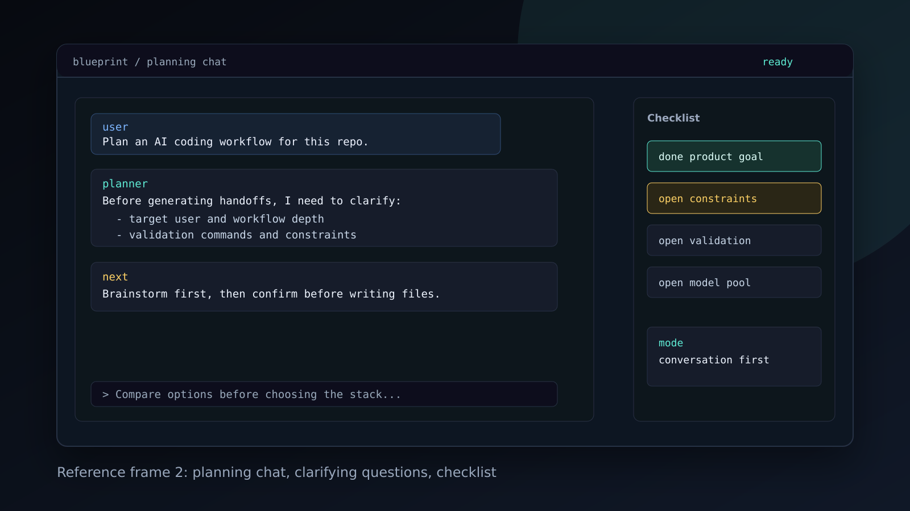
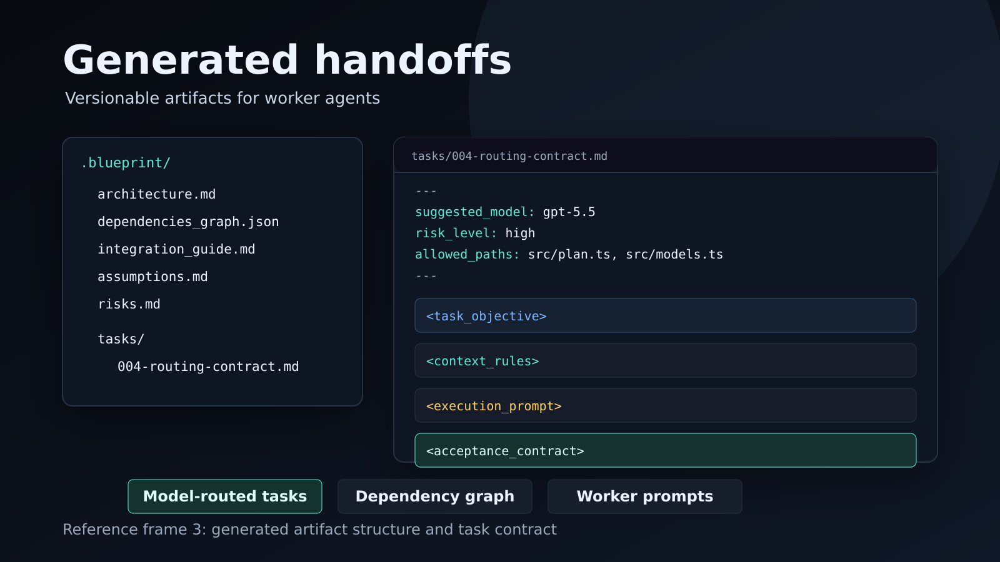

Plan first. Route smarter. Ship with agents.
Terminal AI planning harness that turns vague software ideas into dependency graphs, model-routed handoffs, and validation contracts for coding agents.
AI agents execute fast. Planning still breaks.
Large AI-assisted coding projects fail when the first prompt is vague and the work is not sliced cleanly.
- Context drifts across chats and tools.
- Tasks overlap or miss dependencies.
- Expensive models get used for cheap work.
- Weak models get assigned to high-risk architecture.
- Outputs are hard to audit before code changes begin.
The planning brain before worker agents start.
Blueprint runs an investigative terminal chat, validates missing requirements, routes work to exact models, and writes handoffs that other agents can execute.
One terminal surface from setup to handoff.
The harness keeps configuration, brainstorming, preview, and artifact generation in one flow.
Planning chat, not a rigid form.

Routes by exact model, not just provider.
Risk & Fit
Architecture, security, and multi-file work require stronger reasoning.
Cost & Latency
Small documentation or formatting tasks can use cheaper, faster models.
Context & Effort
Model context window and reasoning settings are part of routing.
Versionable handoffs for worker agents.

Working planner-only harness.
Version 1 is focused on planning and handoff generation. It does not execute worker agents automatically.
- TypeScript CLI/TUI with Ink and Commander.
- OpenAI/Codex, Claude Code, and Gemini CLI integration paths.
- Provider registry and selected model pool.
- Deterministic and LLM planning engines.
- Handoff linting, export, and smart revise.
- CI passing with 111 tests.
From planner to supervisor.
Blueprint 2.0 can run workers from the same terminal harness, track progress, handle failures, and integrate results.